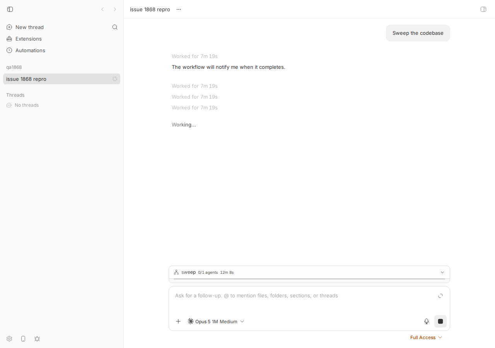
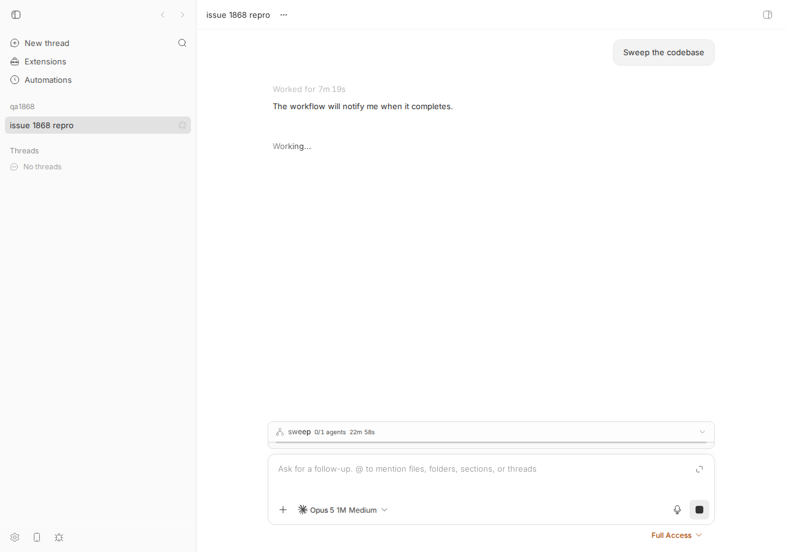

#1868 · Timeline stacks one "Worked for" row per byte page while a large Workflow streams progress snapshots
Verdict: REPRODUCED · Root-cause confidence: high
1. TL;DR
When a finished turn started a long-running Workflow background task and that workflow keeps streaming large progress snapshots, opening the thread shows the finished turn's "Worked for 7m 19s" summary several times, stacked above "Working…". Both halves of the issue's explanation check out. (a) Every item/backgroundTask/progress event stores the full workflow snapshot; the timeline byte budget (4 MiB) counts all of them although only the latest per task matters, so a still-running workflow forces the timeline into byte-window paging with pages that hold nothing but superseded snapshots. (b) On each such byte-window page, the progress rows' parentToolCallId pulls in the Workflow tool call from the finished turn, the lifecycle closure adds that turn's turn/started/turn/completed, and the projection emits a completed turn row for it. buildSequencePageTimelineRows only clamps a turn row when its range overlaps the window; here it does not, so the row is emitted verbatim with a page-unique id, and the client rightly keeps one row per id. I reproduced this three ways: the issue's unit test (fails as described), the HTTP API on a dev instance seeded with the same shape (4 pages, 4 distinct turn-1 rows), and the web app (screenshot below shows four "Worked for 7m 19s"). Pruning the superseded snapshots makes it disappear (control screenshot).
2. Claims vs findings
| Claim from the issue | Status | Evidence |
|---|---|---|
| Thread with a running Workflow after a finished turn stacks "Worked for 7m 19s" 6–7 times above "Working…" | Verified | Web app screenshot 1868-app-stacked-worked-for.png: 4× "Worked for 7m 19s" with my seed of 45 × 300 KB snapshots (count = number of byte pages, so 4 here vs 6–7 with the reporter's 125 × 262 KB). The API walk (live-timeline-walk.txt) shows one turn row per byte page with distinct ids, which is what the client stacks. |
| The thread shows "Loading older messages…" while it pages in | Unverified | The latest page returns hasOlderRows: true with a byte-window cursor, so the client does load older pages; on localhost the older pages load within ~1 s and the transient was too brief to capture in a screenshot. |
| Both unit tests in the issue fail today | Verified | vitest at b33abbff0: expected [ …(4) ] to have a length of 1 but got 4 and expected true to be false (hasOlderRows). See §4. |
| Superseded progress snapshots spend the byte budget; the byte floor is computed over every non-excluded row | Verified | storedTimelineWindowConditions only excludes THREAD_TIMELINE_EXCLUDED_EVENT_TYPES (thread/started, identity, contextWindowUsage, tokenUsage, turn/diff, turn/plan) — progress rows are counted. Latest page reports eventDataBytes=3906463 = 13 snapshots and hasOlderRows=true. |
| Only the latest snapshot per task is load-bearing; the pruner deletes the rest, but only every 250 sequences / 30 s on an active thread | Verified | pruneBackgroundTaskProgressEvents keeps only the newest per item_id; maybePruneActiveThreadEventHistory requires both ACTIVE_THREAD_EVENT_PRUNE_MIN_SEQUENCE_DELTA = 250 and ACTIVE_THREAD_EVENT_PRUNE_MIN_INTERVAL_MS = 30_000. Between prunes up to ~250 snapshots accumulate. |
Each byte-window page emits a phantom summary row for the spawning turn via parent closure + turn lifecycle closure + cleared contextOnlyToolCallIds | Verified | Per-page dump: pages 2 and 3 (windows starting at seq 29 / 16) each return exactly one row, …:turn-1:turn:sequence-page:29 / :16, with seq 2-8 — entirely below the window. Code path in §5. |
buildSequencePageTimelineRows clamps only overlapping turn rows; non-overlapping rows are returned verbatim with a page-unique id | Verified | timeline.ts#L1524-L1566: sourceSeqStart <= sourceSeqEnd ? clamp : { ...row, id: `${row.id}${suffix}` }. |
| Client keeps one row per id, so it is right to keep them all | Verified (by behavior) | The app rendered exactly as many rows as distinct ids the API returned (4). |
| Does not reproduce once the snapshots are pruned / turn 2 completed | Verified | After deleting the 44 superseded snapshots on the dev DB (and bumping maxSeq to bypass the timeline cache), the latest page fits: 1 page, 1 turn row (control screenshot). |
| Still happens on main at b33abbff0 | Verified | All repros run at b33abbff0; git log b33abbff0..origin/main -- timeline.ts events.ts event-pruning.ts is empty (no later fix). |
| Reporter's real thread ids / 206-agent workflow / 7m 19s duration | Unverified | Lives in the reporter's ~/.bb; not touched. My seed reproduces the same shape with a synthetic 7m 19s turn. |
{kind=link}
{kind=link}
3. Environment
- bb
b33abbff098ac4c857578e7350d492dcaa65d489(main, 0.39.0), Linux 7.0.0-29-generic, Node v24.18.0, vitest 4.1.1 - Provider: none needed — thread events are seeded directly (providerId
claude-codeon the thread row only) - Own dev instance from
scripts/bb-dev-app current: Apphttp://localhost:13806, Serverhttp://localhost:21806, Host daemon127.0.0.1:29806, data dir~/.bb-dev/projects-bb-.claude-worktrees-wf_880dc823-33c-1-3d54d936a1fc(deleted at cleanup) - Browser: dev-browser (headless Chromium), viewport 1280×900
4. Minimal reproduction
4a. Unit test (server only, in-memory SQLite) — fails on b33abbff0
- Save the test below as
apps/server/test/services/threads/timeline-workflow-progress-window.test.ts(copy at1868/repro/timeline-workflow-progress-window.test.ts). - Run
cd apps/server && pnpm exec vitest run test/services/threads/timeline-workflow-progress-window.test.ts.expected: 2 passed actual: RUN v4.1.1 /home/USER/projects/bb/.claude/worktrees/wf_880dc823-33c-1/apps/server ❯ @bb/server test/services/threads/timeline-workflow-progress-window.test.ts (2 tests | 2 failed) 304ms × renders the spawning turn's summary once, not once per byte page 191ms × does not spend the byte budget on superseded progress snapshots 112ms ⎯⎯⎯⎯⎯⎯⎯ Failed Tests 2 ⎯⎯⎯⎯⎯⎯⎯ FAIL @bb/server test/services/threads/timeline-workflow-progress-window.test.ts > workflow progress snapshots across timeline pages > renders the spawning turn's summary once, not once per byte page AssertionError: expected [ …(4) ] to have a length of 1 but got 4 - Expected + Received - 1 + 4 ❯ test/services/threads/timeline-workflow-progress-window.test.ts:301:46 299| 300| // One finished turn, one "Worked for" row — whatever the paging d… 301| expect(turnOneRows.map((row) => row.id)).toHaveLength(1); | ^ 302| // And no page ever emits a finished-turn row that lies entirely o… 303| // the events that page actually covers. ⎯⎯⎯⎯⎯⎯⎯⎯⎯⎯⎯⎯⎯⎯⎯⎯⎯⎯⎯⎯⎯⎯⎯⎯[1/2]⎯ FAIL @bb/server test/services/threads/timeline-workflow-progress-window.test.ts > workflow progress snapshots across timeline pages > does not spend the byte budget on superseded progress snapshots AssertionError: expected true to be false // Object.is equality - Expected + Received - false + true ❯ test/services/threads/timeline-workflow-progress-window.test.ts:314:55 312| // Only the latest snapshot per task is load-bearing (see 313| // pruneBackgroundTaskProgressEvents), so the whole thread fits on… 314| expect(latest.response.timelinePage.hasOlderRows).toBe(false); | ^ 315| expect(latest.profile.eventDataBytes).toBeLessThan(SNAPSHOT_BYTES … 316| expect(latest.response.activeWorkflows).toHaveLength(1); ⎯⎯⎯⎯⎯⎯⎯⎯⎯⎯⎯⎯⎯⎯⎯⎯⎯⎯⎯⎯⎯⎯⎯⎯[2/2]⎯ Test Files 1 failed (1) Tests 2 failed (2) Start at 01:50:18 Duration 1.33s (transform 520ms, setup 0ms, import 948ms, tests 304ms, environment 0ms)
Per-page dump from an instrumented copy of the same test (the latest page and two older byte pages each return one turn-1 row whose events, seq 2–8, are entirely below the window that starts at seq 42 / 29 / 16):
--- page 1: rows=1 eventDataBytes=3906463 hasOlderRows=true olderCursor={"anchorSeq":42,"anchorId":"thr_hiu7yabhx2:byte-window:42"}
turn thr_hiu7yabhx2:turn-1:turn seq 2-8 turnId=turn-1 status=completed
--- page 2: rows=1 eventDataBytes=4206928 hasOlderRows=true olderCursor={"anchorSeq":29,"anchorId":"thr_hiu7yabhx2:byte-window:29"}
turn thr_hiu7yabhx2:turn-1:turn:sequence-page:29 seq 2-8 turnId=turn-1 status=completed
--- page 3: rows=1 eventDataBytes=4206928 hasOlderRows=true olderCursor={"anchorSeq":16,"anchorId":"thr_hiu7yabhx2:byte-window:16"}
turn thr_hiu7yabhx2:turn-1:turn:sequence-page:16 seq 2-8 turnId=turn-1 status=completed
--- page 4: rows=3 eventDataBytes=2104735 hasOlderRows=false olderCursor=null
conversation thr_hiu7yabhx2:user-seed:1:sequence-page:1 seq 1-1
turn thr_hiu7yabhx2:turn-1:turn:sequence-page:1 seq 1-8 turnId=turn-1 status=completed
conversation thr_hiu7yabhx2:assistant:kind:assistant|turn:turn-1|parent:root|item:assistant-1:sequence-page:1 seq 7-7
timeline-workflow-progress-window.test.ts (verbatim from the issue)
import { describe, expect, it } from "vitest";
import {
encodeClientTurnRequestIdNumber,
LOCAL_WORKFLOW_TASK_TYPE,
threadScope,
turnScope,
} from "@bb/domain";
import type { Thread } from "@bb/domain";
import {
createConnection,
createProject,
createThread,
insertEvents,
migrate,
noopNotifier,
upsertHost,
} from "@bb/db";
import type { DbConnection } from "@bb/db";
import type {
TimelinePaginationCursor,
TimelineRow,
} from "@bb/server-contract";
import {
buildThreadTimelineWithProfile,
THREAD_TIMELINE_EVENT_DATA_BYTE_LIMIT,
} from "../../../src/services/threads/timeline.js";
/** Larger than any thread these tests build, so the event budget never binds. */
const LARGE_BUDGET = 1_000_000;
const providerThreadId = "provider-root";
const WORKFLOW_CALL_ID = "call-workflow";
const WORKFLOW_TASK_ID = "task:wf-1";
/**
* A workflow snapshot with a couple hundred agents is ~250 KB. Enough of them
* to span several 4 MiB byte windows.
*/
const SNAPSHOT_BYTES = 300_000;
const SNAPSHOT_COUNT = 45;
const execution = {
model: "gpt-5",
serviceTier: "default",
reasoningLevel: "medium",
permissionMode: "full",
source: "client/turn/requested",
} as const;
type EventInput = Parameters<typeof insertEvents>[2][number];
function setup(): { db: DbConnection; thread: Thread } {
const db = createConnection(":memory:");
migrate(db);
const host = upsertHost(db, noopNotifier, {
name: "test-host",
type: "persistent",
});
const { project } = createProject(db, noopNotifier, {
name: "test-project",
source: { type: "local_path", hostId: host.id, path: "/tmp/test" },
});
const thread = createThread(db, noopNotifier, {
projectId: project.id,
providerId: "claude-code",
});
return { db, thread };
}
function workflowTaskData(args: {
status: "pending" | "completed";
padding: number;
}): string {
return JSON.stringify({
providerThreadId,
item: {
type: "backgroundTask",
id: WORKFLOW_TASK_ID,
taskType: LOCAL_WORKFLOW_TASK_TYPE,
description: "sweep the codebase",
status: args.status,
taskStatus: args.status === "pending" ? "running" : "completed",
skipTranscript: false,
workflowName: "sweep",
parentToolCallId: WORKFLOW_CALL_ID,
workflow: {
phases: [{ index: 1, title: "Find" }],
agents: [
{
index: 1,
label: "find:boot",
state: "running",
model: "gpt-5",
attempt: 1,
cached: false,
lastProgressAt: 1,
promptPreview: "x".repeat(args.padding),
},
],
},
},
});
}
/**
* Turn 1: user asks, agent starts a Workflow tool call (a local_workflow
* background task), reports back, and the turn completes. The workflow keeps
* running and streams thread-scoped progress snapshots long after turn 1
* completed. Turn 2 is a provider-opened turn that is still pending.
*/
function seedWorkflowThread(
db: DbConnection,
thread: Thread,
options: { snapshotCount: number },
): void {
const events: EventInput[] = [];
let sequence = 0;
const push = (event: Omit<EventInput, "sequence" | "threadId">): void => {
sequence += 1;
events.push({ ...event, sequence, threadId: thread.id });
};
const clientRequestId = encodeClientTurnRequestIdNumber({ value: 1 });
push({
type: "client/turn/requested",
scope: threadScope(),
itemId: null,
itemKind: null,
data: JSON.stringify({
direction: "outbound",
source: "tell",
initiator: "user",
request: { method: "turn/start", params: {} },
requestId: clientRequestId,
senderThreadId: null,
input: [{ type: "text", text: "Sweep the codebase", mentions: [] }],
target: { kind: "thread-start" },
execution,
}),
});
push({
type: "turn/started",
scope: turnScope("turn-1"),
providerThreadId,
itemId: null,
itemKind: null,
data: JSON.stringify({}),
});
push({
type: "turn/input/accepted",
scope: turnScope("turn-1"),
providerThreadId,
itemId: null,
itemKind: null,
data: JSON.stringify({ clientRequestId }),
});
push({
type: "item/started",
scope: turnScope("turn-1"),
providerThreadId,
itemId: WORKFLOW_CALL_ID,
itemKind: "toolCall",
data: JSON.stringify({
providerThreadId,
item: {
type: "toolCall",
id: WORKFLOW_CALL_ID,
tool: "Workflow",
arguments: { script: "export const meta = {}" },
status: "pending",
},
}),
});
push({
type: "item/started",
scope: turnScope("turn-1"),
providerThreadId,
itemId: WORKFLOW_TASK_ID,
itemKind: "backgroundTask",
data: workflowTaskData({ status: "pending", padding: 0 }),
});
push({
type: "item/completed",
scope: turnScope("turn-1"),
providerThreadId,
itemId: WORKFLOW_CALL_ID,
itemKind: "toolCall",
data: JSON.stringify({
providerThreadId,
item: {
type: "toolCall",
id: WORKFLOW_CALL_ID,
tool: "Workflow",
arguments: { script: "export const meta = {}" },
result: "started",
status: "completed",
},
}),
});
push({
type: "item/completed",
scope: turnScope("turn-1"),
providerThreadId,
itemId: "assistant-1",
itemKind: "agentMessage",
data: JSON.stringify({
providerThreadId,
item: {
type: "agentMessage",
id: "assistant-1",
text: "The workflow will notify me when it completes.",
status: "completed",
},
}),
});
push({
type: "turn/completed",
scope: turnScope("turn-1"),
providerThreadId,
itemId: null,
itemKind: null,
data: JSON.stringify({ status: "completed", providerThreadId }),
});
push({
type: "turn/started",
scope: turnScope("turn-2"),
providerThreadId,
itemId: null,
itemKind: null,
data: JSON.stringify({}),
});
for (let index = 0; index < options.snapshotCount; index += 1) {
push({
type: "item/backgroundTask/progress",
scope: threadScope(),
providerThreadId,
itemId: WORKFLOW_TASK_ID,
itemKind: "backgroundTask",
data: workflowTaskData({ status: "pending", padding: SNAPSHOT_BYTES }),
});
}
insertEvents(db, noopNotifier, events);
}
function buildPage(
db: DbConnection,
thread: Thread,
cursor: TimelinePaginationCursor | null,
) {
return buildThreadTimelineWithProfile(db, thread, {
eventBudget: LARGE_BUDGET,
includeProviderUnhandledOperations: false,
includeNestedRows: false,
maxInlineOutputChars: 32_000,
maxSeq: 0,
page: cursor
? { kind: "older", beforeCursor: cursor, segmentLimit: 20 }
: { kind: "latest", segmentLimit: 20 },
});
}
interface WalkResult {
maxEventDataBytes: number;
pages: number;
rows: TimelineRow[];
}
function walkAllPages(db: DbConnection, thread: Thread): WalkResult {
const rowsByPage: TimelineRow[][] = [];
let cursor: TimelinePaginationCursor | null = null;
let maxEventDataBytes = 0;
let pages = 0;
for (;;) {
const { profile, response } = buildPage(db, thread, cursor);
pages += 1;
maxEventDataBytes = Math.max(maxEventDataBytes, profile.eventDataBytes);
rowsByPage.push(response.rows);
if (!response.timelinePage.hasOlderRows) {
break;
}
cursor = response.timelinePage.olderCursor;
expect(cursor).not.toBeNull();
expect(pages).toBeLessThan(50);
}
return { maxEventDataBytes, pages, rows: rowsByPage.reverse().flat() };
}
describe("workflow progress snapshots across timeline pages", () => {
it("renders the spawning turn's summary once, not once per byte page", () => {
const { db, thread } = setup();
seedWorkflowThread(db, thread, { snapshotCount: SNAPSHOT_COUNT });
expect(SNAPSHOT_BYTES * SNAPSHOT_COUNT).toBeGreaterThan(
THREAD_TIMELINE_EVENT_DATA_BYTE_LIMIT * 2,
);
const walk = walkAllPages(db, thread);
const turnRows = walk.rows.filter(
(row): row is Extract<TimelineRow, { kind: "turn" }> =>
row.kind === "turn",
);
const turnOneRows = turnRows.filter((row) => row.turnId === "turn-1");
// One finished turn, one "Worked for" row — whatever the paging did.
expect(turnOneRows.map((row) => row.id)).toHaveLength(1);
// And no page ever emits a finished-turn row that lies entirely outside
// the events that page actually covers.
expect(new Set(turnRows.map((row) => row.id)).size).toBe(turnRows.length);
});
it("does not spend the byte budget on superseded progress snapshots", () => {
const { db, thread } = setup();
seedWorkflowThread(db, thread, { snapshotCount: SNAPSHOT_COUNT });
const latest = buildPage(db, thread, null);
// Only the latest snapshot per task is load-bearing (see
// pruneBackgroundTaskProgressEvents), so the whole thread fits one page.
expect(latest.response.timelinePage.hasOlderRows).toBe(false);
expect(latest.profile.eventDataBytes).toBeLessThan(SNAPSHOT_BYTES * 3);
expect(latest.response.activeWorkflows).toHaveLength(1);
expect(
latest.response.rows.filter((row) => row.kind === "turn"),
).toHaveLength(1);
});
});
4b. Live: dev server + web app
- Start your own dev instance:
scripts/bb-dev-app current; note the Server URL and data dir. Create a project (host id fromGET /api/v1/hosts):curl -s -X POST $BB_SERVER_URL/api/v1/projects -H 'content-type: application/json' \ -d '{"name":"qa1868","source":{"type":"local_path","path":"/tmp/bb-1868-qa","hostId":"<host id>"}}' - Seed a thread with the issue's shape directly into the dev DB (finished turn 1 with a
Workflowtool call + workflow background task, pending turn 2, 45 thread-scoped ~300 KB progress snapshots). The seed script imports@bb/domainand@bb/db, so copy it intoapps/serverfirst:cp <this report dir>/1868/repro/seed-1868.ts apps/server/ cd apps/server && pnpm exec tsx seed-1868.ts <data dir>/bb.db <project id> # => {"threadId":"thr_mfus3sx7bg","events":54}Script:1868/repro/seed-1868.ts. - Walk the timeline through the HTTP API with
1868/repro/walk-timeline-pages.py(plain Python 3, no dependencies):python3 <this report dir>/1868/repro/walk-timeline-pages.py http://localhost:21806 thr_mfus3sx7bg expected: 1 page, hasOlderRows=False, one turn-1 row actual: --- page 1: rows=1 kind=latest hasOlderRows=True olderCursor={"anchorSeq": 42, "anchorId": "thr_mfus3sx7bg:byte-window:42"} turn thr_mfus3sx7bg:turn-1:turn seq 2-8 turnId=turn-1 status=completed startedAt=1787103287857 completedAt=1787103726857 --- page 2: rows=1 kind=older hasOlderRows=True olderCursor={"anchorSeq": 29, "anchorId": "thr_mfus3sx7bg:byte-window:29"} turn thr_mfus3sx7bg:turn-1:turn:sequence-page:29 seq 2-8 turnId=turn-1 status=completed startedAt=1787103287857 completedAt=1787103726857 --- page 3: rows=1 kind=older hasOlderRows=True olderCursor={"anchorSeq": 16, "anchorId": "thr_mfus3sx7bg:byte-window:16"} turn thr_mfus3sx7bg:turn-1:turn:sequence-page:16 seq 2-8 turnId=turn-1 status=completed startedAt=1787103287857 completedAt=1787103726857 --- page 4: rows=3 kind=older hasOlderRows=False olderCursor=null conversation thr_mfus3sx7bg:user-seed:1:sequence-page:1 seq 1-1 turn thr_mfus3sx7bg:turn-1:turn:sequence-page:1 seq 1-8 turnId=turn-1 status=completed startedAt=1787103287857 completedAt=1787103726857 conversation thr_mfus3sx7bg:assistant:kind:assistant|turn:turn-1|parent:root|item:assistant-1:sequence-page:1 seq 7-7 total pages 4; turn rows 4; distinct turn row ids 4 - Open
http://localhost:13806/projects/<project>/threads/thr_mfus3sx7bg. The client auto-loads the older pages and renders one "Worked for 7m 19s" per byte page:

- Control: delete the superseded snapshots (what
pruneBackgroundTaskProgressEventseventually does), append one event somaxSeqchanges (the timeline response cache is keyed on it), reload:--- page 1: rows=3 kind=latest hasOlderRows=False olderCursor=null conversation thr_mfus3sx7bg:user-seed:1 seq 1-1 turn thr_mfus3sx7bg:turn-1:turn seq 1-8 turnId=turn-1 status=completed startedAt=1787103287857 completedAt=1787103726857 conversation thr_mfus3sx7bg:assistant:kind:assistant|turn:turn-1|parent:root|item:assistant-1 seq 7-7 total pages 1; turn rows 1; distinct turn row ids 1

Repro files: 1868/repro/
5. Root cause
Part 1 — the byte budget counts superseded snapshots. applyTimelineWindowByteBudget (timeline.ts#L1052-L1069) asks findStoredTimelineWindowByteBudgetFloor (events.ts#L2877-L2946) for the oldest row that fits in THREAD_TIMELINE_EVENT_DATA_BYTE_LIMIT = 4 MiB. Its WHERE clause (storedTimelineWindowConditions, events.ts#L2828-L2842) excludes only THREAD_TIMELINE_EXCLUDED_EVENT_TYPES; item/backgroundTask/progress is not in that list, and each such row carries the entire workflow snapshot. The system already declares those rows disposable — pruneBackgroundTaskProgressEvents (events.ts#L3660-L3704) keeps only the newest per item_id — but the pruner is opportunistic: maybePruneActiveThreadEventHistory runs only when both 250 sequences and 30 s have elapsed since the last prune (event-pruning.ts#L62-L63, #L240-L252). A workflow with hundreds of agents emits a snapshot every few seconds, so between prunes tens of MB of superseded snapshots sit at the top of the thread, and the latest page is cut into ~4 MiB windows that contain nothing renderable.
Part 2 — each byte-window page manufactures the spawning turn. In selectStandardTimelineEventRows, a byte window's rows are the progress snapshots. Then:
ensureTimelineWindowParentedRows(timeline.ts#L463-L545) collectsparentToolCallIdfrom those rows (theWorkflowcall in turn 1) and fetches the tool-call rows vialistStoredToolCallRowsByItemIds. It flags them ascontextOnlyToolCallIds, but…- …byte-window mode discards that set:
contextOnlyToolCallIds: window.byteWindowSequenceStart === null ? … : new Set()(timeline.ts#L1479-L1482), so the projection treats the tool call as a real root message of turn 1 (seeisRootSuppressedContextinpackages/thread-view/src/normalize-event-projection.ts). ensureTimelineWindowTurnStartedRowsadds turn 1'sturn/started, and because this is a byte windowensureSequenceWindowTurnCompletedRows(timeline.ts#L754-L782) adds itsturn/completed. The projection now sees a complete turn 1 with one message and builds aturnrow withstartedAt/completedAt= the real 7 m 19 s.buildSequencePageTimelineRows(timeline.ts#L1524-L1566) suffixes ids with:sequence-page:<byteWindowSequenceStart>and clampssourceSeq*to the window — but only whenmax(rowStart, windowStart) <= min(rowEnd, windowEnd). Turn 1 (seq 2–8) never overlaps a window starting at 16/29/42, so the row is passed through unchanged, with a page-unique id.
Result: N byte pages ⇒ N distinct turn-1 row ids ⇒ N "Worked for" rows in the client, which merges by id. The latest page's copy has no suffix and is the fourth one. This is a regression surface introduced with byte paging in PR #1199 (eaa55fa84, fixes #1129); its tests only cover windows that really slice a large finished turn.
Deeper issue. The paging layer has no notion of "superseded" events; correctness currently depends on the pruner having run recently. Also, the timeline response cache comment (timeline-cache.ts, "pruning is output-preserving") is not true for pagination: pruning changes hasOlderRows/cursors, as the control step showed (I had to bump maxSeq to see the pruned result). Not user-visible on its own, but worth knowing when fixing.
6. Proposed fix (first principles)
Two independent changes; each fixes one failing assertion. I prototyped both (diff: prototype-fix.diff) and ran the existing apps/server/test/services/threads/timeline* suites (42 tests pass) plus the issue's tests.
- Server,
buildSequencePageTimelineRows: on a byte-window page, drop anyturnrow whose[sourceSeqStart, sourceSeqEnd]does not intersect[byteWindowSequenceStart, byteWindowSequenceEnd]instead of returning it verbatim. Such a row only exists because of parent/lifecycle closure and belongs to the page that holds the turn's own events. With this, the issue's first test passes. Risk: a turn row that legitimately spans a page boundary still overlaps and is clamped as today; a completed turn wholly inside a page is untouched. Alternative at the source: keepcontextOnlyToolCallIdsin byte-window mode (why it is cleared for byte pages is not documented; that likely was to let a large sliced turn keep its tool calls, so the row-level filter is the safer, more targeted change). - DB, timeline window reads: make superseded progress snapshots invisible to the timeline reads that decide and materialize a window —
storedTimelineWindowConditions(byte floor, byte count,listStoredTimelineWindowEventRows) and the full-read path (listRecentStoredEventRowsused byselectFullTimelineEventRows) — with a condition equivalent to the pruner's:type <> 'item/backgroundTask/progress' OR id IN (SELECT id … WHERE item_id = events.item_id ORDER BY sequence DESC LIMIT 1). My prototype instoredTimelineWindowConditionsalone makes the latest page fit (hasOlderRows=false, one turn row); the remaining failing assertion (profile.eventDataBytes) is because the fits-everything path then reads throughlistRecentStoredEventRows, which needs the same exclusion. Check the query plan against the existing event indexes; the pruner already runs an equivalent correlated subquery. Also worth tightening: runpruneBackgroundTaskProgressEventson progress ingestion with only the 30 s guard (drop the 250-sequence gate for that step) so accumulation is bounded in time.
7. PR review
No linked open PRs at investigation time.
8. Related issues
- #1129 (closed) Large finished turns can OOM bb-server during timeline projection — origin of byte paging; PR #1199 "Page large finished turns by stored byte size" (merged,
eaa55fa84) introducedbuildSequencePageTimelineRowsand the byte-window lifecycle closure. - #1517 (closed) Give the timeline whole-item closure a byte budget — same subsystem.
- #1714 (open) / #1201 (closed) — cross-turn tool call state in turn details; different symptom (item state, not duplicated turn rows), as the issue says.
9. Appendix
Prototype fix diff (not committed; reverted after testing)
diff --git a/apps/server/src/services/threads/timeline.ts b/apps/server/src/services/threads/timeline.ts
index 430d64660..ccd2379d9 100644
--- a/apps/server/src/services/threads/timeline.ts
+++ b/apps/server/src/services/threads/timeline.ts
@@ -1538,13 +1538,13 @@ function buildSequencePageTimelineRows(
selection.responsePageKind === "latest"
? ""
: `:sequence-page:${selection.byteWindowSequenceStart}`;
- return rowsWithPlaceholder.map((row): TimelineRow => {
+ return rowsWithPlaceholder.flatMap((row): TimelineRow[] => {
if (
row.kind !== "turn" ||
selection.byteWindowSequenceEnd === null ||
selection.byteWindowSequenceStart === null
) {
- return { ...row, id: `${row.id}${suffix}` };
+ return [{ ...row, id: `${row.id}${suffix}` }];
}
const sourceSeqStart = Math.max(
row.sourceSeqStart,
@@ -1555,13 +1555,18 @@ function buildSequencePageTimelineRows(
selection.byteWindowSequenceEnd,
);
return sourceSeqStart <= sourceSeqEnd
- ? {
- ...row,
- id: `${row.id}${suffix}`,
- sourceSeqEnd,
- sourceSeqStart,
- }
- : { ...row, id: `${row.id}${suffix}` };
+ ? [
+ {
+ ...row,
+ id: `${row.id}${suffix}`,
+ sourceSeqEnd,
+ sourceSeqStart,
+ },
+ ]
+ : // PROTOTYPE (#1868): a finished-turn row whose events lie entirely
+ // outside this byte window came in through parent/lifecycle closure
+ // and belongs to the page that actually holds those events.
+ [];
});
}
diff --git a/packages/db/src/data/events.ts b/packages/db/src/data/events.ts
index e7de63b63..061d9de86 100644
--- a/packages/db/src/data/events.ts
+++ b/packages/db/src/data/events.ts
@@ -2838,6 +2838,19 @@ function storedTimelineWindowConditions(
if (args.excludedTypes && args.excludedTypes.length > 0) {
conditions.push(notInArray(events.type, [...args.excludedTypes]));
}
+ // PROTOTYPE (#1868): superseded background-task progress snapshots are
+ // never load-bearing (see pruneBackgroundTaskProgressEvents), so neither
+ // the byte budget nor the materialized window should include them.
+ const progressType =
+ "item/backgroundTask/progress" satisfies ThreadEventType;
+ conditions.push(
+ sql`(${events.type} <> ${progressType} OR ${events.id} IN (
+ SELECT latest.id FROM events latest
+ WHERE latest.thread_id = ${events.threadId}
+ AND latest.type = ${progressType}
+ AND latest.item_id = ${events.itemId}
+ ORDER BY latest.sequence DESC LIMIT 1))`,
+ );
return conditions;
}
Commands run
pnpm install --frozen-lockfile --prefer-offline && pnpm exec turbo run build git fetch origin main; git log b33abbff0..origin/main --oneline -- apps/server/src/services/threads/timeline.ts packages/db/src/data/events.ts apps/server/src/services/system/event-pruning.ts # empty cd apps/server && pnpm exec vitest run test/services/threads/timeline-workflow-progress-window.test.ts # 2 failed scripts/bb-dev-app current curl -s -X POST http://localhost:21806/api/v1/projects ... (project proj_ks8z3m2awr) cd apps/server && pnpm exec tsx seed-1868.ts ~/.bb-dev/.../bb.db proj_ks8z3m2awr # thr_mfus3sx7bg python3 walk-timeline-pages.py http://localhost:21806 thr_mfus3sx7bg dev-browser --browser bb1868 --headless run browser-b.js / browser-c.js / browser-d.js sqlite3 bb.db "DELETE FROM events WHERE thread_id='thr_mfus3sx7bg' AND type='item/backgroundTask/progress' AND id NOT IN (SELECT id FROM events WHERE thread_id='thr_mfus3sx7bg' AND type='item/backgroundTask/progress' AND item_id='task:wf-1' ORDER BY sequence DESC LIMIT 1)" # control: keep only the newest snapshot (the pruner's predicate) # prototype fix: applied, ran vitest on timeline* suites (42 pass + issue test 1 pass), saved diff, reverted pnpm dev:stop; rm -rf data dir; ss -ltn # cleanup
Files
vitest-base.log— raw vitest output at b33abbff0page-walk-dump.txt— per-page rows from the unit testlive-timeline-page1.txt,live-timeline-walk.txt,live-timeline-walk-after-prune.txt— HTTP API outputbrowser-b.js,browser-c.js,browser-d.js— dev-browser scripts used for the screenshotsbuild.log,install log
10. Verification
An independent verifier re-ran both repro paths at b33abbff0 in its own worktree and dev instance (ports 15448/23448/31448): the vitest file reproduces the two reported failures byte-for-byte; the seeded thread walked through the API gives 4 pages / 4 turn rows / 4 distinct ids with byte-window cursors at 42/29/16; a headless Chromium screenshot (1868/verify/1868-verify-app.png) shows four "Worked for 7m 19s" rows above "Working…". Every code claim in section 5 was checked against the base commit; origin/main has no later change to timeline.ts, events.ts, or event-pruning.ts. The prototype diff was applied and behaves as the caveats say. Verdict: acceptable, three minor findings, all applied here: the "Loading older messages…" sub-claim is now its own Unverified row, the live repro names the copy step and the script paths, and the control step pastes the full DELETE statement.